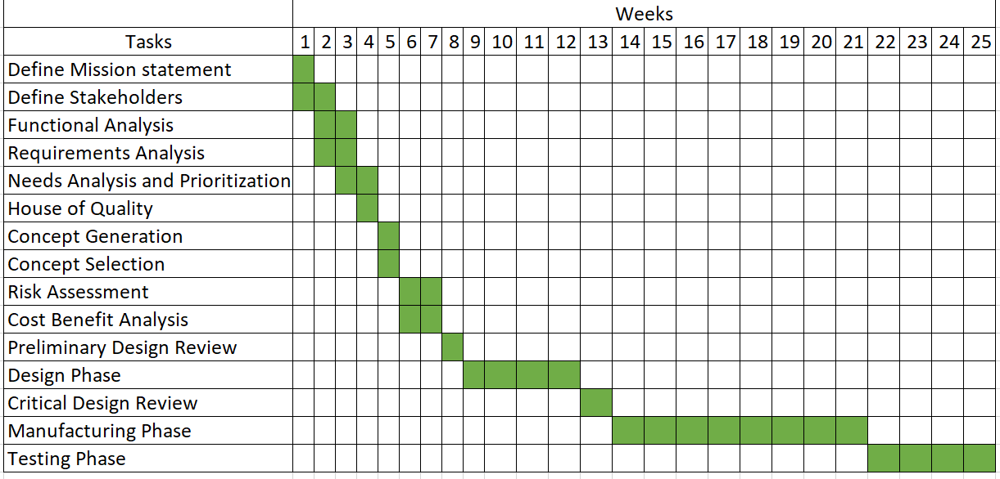
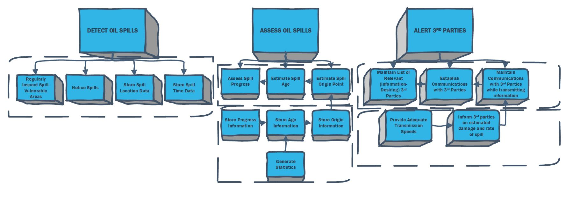

Introduction
Background
In April of 2010, BP's Deepwater Horizon oil rig exploded, killing eleven workers and spilling an estimated 53,000 barrels per day of oil into the Gulf of Mexico. In addition to the human lives lost in the explosion, the resulting oil spill killed over 82,000 birds, 25,900 marine animals, 6,000 sea turtles, and tens of thousands of fish. And this was just the damage seen above the ocean's surface. Deeper in the waters, 100 million gallons of oil from a seafloor oil gusher sank and settled onto the ocean floor.
The Deepwater Horizons disaster was just one of many oil spills that have occurred along US coasts, and not all have received the same amount of public attention. For example, the Taylor Oil Spill has been quietly leaking millions of barrels of oil into the Gulf for fourteen years. Currently, most oil spills are only detected when they become large enough to be unavoidable.
Motivation
Since 1969, at least of forty-four major oil spills have affected US Coasts, with over 10,000 barrels of oil leaked into the ocean. These spills have had terrible consequences, both environmentally and economically. Ever since the terrible blow to BP's reputation following the Deepwater Horizon disaster, systems for surveilling, preventing, and mitigating oil spills have been in high demand. These efforts are further encouraged by the Oil Spills Prevention and Preparedness Regulations put in place by the EPA and US Coast Guard.
Detecting these spills early can mean the difference between a minor setback and a catastrophe for all those affected. This creates a monumental need for affordable and effective early-spill-detection systems within the oil industry. That's where Project Spillcry comes in.
Mission
The mission of Project Spillcry is to create a system capable of detecting and assessing oil spills occurring near US coasts and alerting relevant thid parties in a timely manner. Such a system will minimize the overall cost of ending and recovering from these spills.
Schedule
The project was subdivided into several work stages in which different priorities were decided, and subsequently completed. During the first three weeks of the project the majority of the work done consisted of deciding the scope of the problem and which solutions made sense in the context of the class. Subsequently a week of discussions was had regarding which methods had a likely enough chance of achieving our previously decided goals.
The following month consisted of starting the project from the functional analysis and working through the list of requirements in order to organically come up with the most reliable solution to our designated problem. The final two weeks consisted of determining which assumptions were made in our design and completing the remaining sections such as the executive summary, the background and lessons learned.

Assumptions
The development of a final concept relied on a few key assumptions. Note that the need for these assumptions become more clear in the Development section of this report.
For this preliminary design, we assume:
- The state of an oil spill can be accurately assessed from only the visible layer near the ocean surface. This assumption is critical to the use of UAVs in the final concept.
- Computer vision measurement errors are normally distributed. This is necessary due to the asymmetry of actual measurement distributions in most computer vision applications. This is a standard assumption in the robotics industry.
- Oil spill progress is a linear process with random noise entirely contained in the measurement model. This allows the progression of an oil spill to be described as a linear process with Gaussian noise. This assumption greatly simplifies the task of making reliable predictions related to spill development.
Functional Analysis
To conduct a functional analysis of this problem, we considered three primary high-level functions that our system must perform. In the most simple language, our system must:
- Detect oil spills,
- Assess oil spills, and
- Alert third parties.
However, these functions are noticeably vague and rather unhelpful on their own. Thus, our next step was to consider each of these functions as a set of lower-level “sub-functions” necessary to perform each task. This provided a more detailed analysis and gave us better information with which to generate needs and requirements.
-
Detect oil spills.
- Regularly inspect spill-vulnerable areas. In order to detect oil spills in a timely manner, our system must inspect areas in which spills would be likely to occur (we refer to these as “spill-vulnerable areas”). These areas must be inspected on a regular basis to ensure no spills are able to persist too long without being detected.
- Notice spills. While inspecting spill-vulnerable areas, our system should accurately notice any oil spills. It should not only report spills that are present, but also refrain from “false alarms” (reporting spills that have not actually occurred).
- Store spill location data. When an oil spill is noticed, our system should be capable of somehow logging the location of the oil spill in order for appropriate action to be taken.
- Store spill time data. When an oil spill is noticed, our system should be capable of somehow logging the time at which the spill was detected for the purpose of future analysis.
-
Assess oil spills.
- Assess spill progress. Our system should be capable of somehow assessing how much a detected oil spill has progressed beyond the point of the spill.
- Estimate spill age. Our system should be capable of somehow estimating how long a detected oil spill has existed.
- Estimate spill origin point. Our system should be capable of somehow estimating the origin point of a detected oil spill; that is, where the spill itself is occurring as opposed to simply where the oil currently is.
- Store progress information. Once our system has assessed an oil spill’s progress, it should be able to somehow store this information.
- Store age information. Once our system has calculated an oil spill’s estimated age, it should be able to somehow store this information.
- Store origin information. Once our system has estimated an oil spill’s origin point, it should be able to somehow store this information.
- Generate statistics (spill danger level). Our system should be capable of somehow combining observations of the spill’s progress and rate to compute a “danger level”; in simple terms, some metric that simply tells how “scary” a spill is.
-
Alert third parties.
- Maintain list of relevant third parties. Our system should maintain a list of third parties who would desire information regarding oil spills. These third parties may include governments, corporations, research groups, or non-profit organizations.
- Establish communications with third parties. Our system should be able to somehow establish communications with all relevant third parties (such as those listed above).
- Maintain communications with third parties while transmitting information. Once communications are established, our system should maintain consistent communications while transmitting relevant information to those third parties that desire it. Note that our system need not necessarily maintain consistent communications throughout operation; it need only maintain communications while transmitting information.
- Provide adequate transmission speeds. While transmitting information to third parties, our system should transmit this data and speeds necessary to deliver all information in a timely manner.
- Inform third parties of estimated damage and spill rate. Along with functions listed above, our system must somehow be capable of actually transmitting desired information to relevant third parties.
We then translated these functions into a functional block diagram for more intuitive representation.
